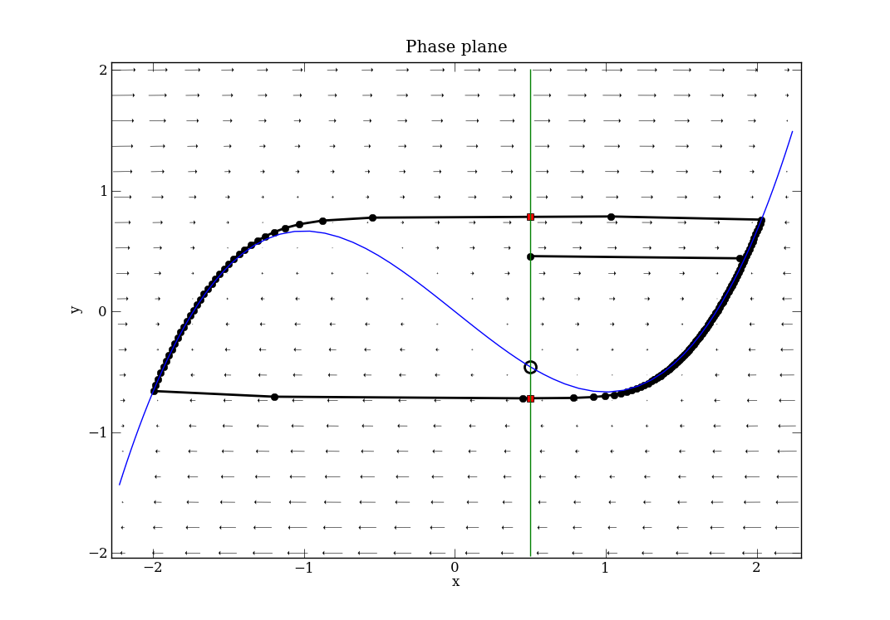

Site navigation:
See Tutorial_VdP.py.
The Van der Pol oscillator is a classic nonlinear oscillator that exhibits multiple scales. The VdP system is originally described as a second order ODE, which we must write as a system of first-order ODEs to solve with PyDSTool. In Lienard coordinates, but in a slightly different parameterization to the version shown in the above link, we have:
\( \left\{ \begin{align*} \frac{dx}{dt} &= (y-(x^3 - x))/\epsilon, \\ \frac{dy}{dt} &= a - x \end{align*} \right. \qquad \) (VdP)
The system is specified using PyDSTool with
import PyDSTool as dst
from PyDSTool import args
import numpy as np
from matplotlib import pyplot as plt
pars = {'eps': 1e-2, 'a': 0.5}
icdict = {'x': pars['a'],
'y': pars['a'] - pars['a']**3/3}
xstr = '(y - (x*x*x/3 - x))/eps'
ystr = 'a - x'
event_x_a = dst.makeZeroCrossEvent('x-a', 0,
{'name': 'event_x_a',
'eventtol': 1e-6,
'term': False,
'active': True},
varnames=['x'], parnames=['a'],
targetlang='python') # targetlang is redundant (defaults to python)
DSargs = args(name='vanderpol') # struct-like data
DSargs.events = [event_x_a]
DSargs.pars = pars
DSargs.tdata = [0, 3]
DSargs.algparams = {'max_pts': 3000, 'init_step': 0.02, 'stiff': True}
DSargs.varspecs = {'x': xstr, 'y': ystr}
DSargs.xdomain = {'x': [-2.2, 2.5], 'y': [-2, 2]}
DSargs.fnspecs = {'Jacobian': (['t','x','y'],
"""[[(1-x*x)/eps, 1/eps ],
[ -1, 0 ]]""")}
DSargs.ics = icdict
vdp = dst.Vode_ODEsystem(DSargs)
The zero-crossing event is defined to occur whenever the 'x' variable crosses the value of the parameter 'a' from either direction. The 0 in the second argument indicates the bi-directionality (see Events). The 'targetlang' option for the event is shown only to remind you that it must be changed to 'c' if you wish to change the integrator to one of the C-based integrators (see Generators). The 'algparams' option provides some integrator parameters to ensure an appropriate level of accuracy and efficiency for our needs. The Jacobian matrix of the vector field is also defined by hand as a specially-named auxiliary function. This is used both by the integrator and by some of the phase plane tools described later.
The solution of the Van der Pol system, Eq. (VdP), can be computed using the Generator ODE instance:
traj = vdp.compute('test_traj')
pts = traj.sample()
evs = traj.getEvents('event_x_a')
# figure 1 is the time evolution of the two variables
plt.figure(1)
plt.plot(pts['t'], pts['x'], 'b', linewidth=2)
plt.plot(pts['t'], pts['y'], 'r', linewidth=2)
Depending on your local configuration of the Matplotlib interactive mode, you may or may not need to add plt.show() before you will see plots.
We now create a phase plane diagram for the system and show how to plot its nullclines, and find any fixed points present. We set a tolerance parameter in some of the following calls that happens to be named 'eps' in the functions imported from the phase plane toolbox. This name clash with the parameter name in the VdP model is coincidental (and maybe unfortunate to a beginner) but poses no threat to the working of this code! (The scope of these names is different.)
plt.figure(2)
# phase plane tools are in the Toolbox module
from PyDSTool.Toolbox import phaseplane as pp
# plot vector field, using a scale exponent to ensure arrows are well spaced
# and sized
pp.plot_PP_vf(vdp, 'x', 'y', scale_exp=-1)
# only one fixed point, hence [0] at end.
# n=4 uses three starting points in the domain to find any fixed points, to an
# accuracy of eps=1e-8.
fp_coord = pp.find_fixedpoints(vdp, n=4, eps=1e-8)[0]
fp = pp.fixedpoint_2D(vdp, dst.Point(fp_coord), eps=1e-8)
# n=3 uses three starting points in the domain to find nullcline parts, to an
# accuracy of eps=1e-8, and a maximum step for the solver of 0.1 units.
# The fixed point found is also provided to help locate the nullclines.
nulls_x, nulls_y = pp.find_nullclines(vdp, 'x', 'y', n=3, eps=1e-8, max_step=0.1,
fps=[fp_coord])
# plot the fixed point
pp.plot_PP_fps(fp)
# plot the nullclines
plt.plot(nulls_x[:,0], nulls_x[:,1], 'b')
plt.plot(nulls_y[:,0], nulls_y[:,1], 'g')
# plot the trajectory
plt.plot(pts['x'], pts['y'], 'k-o', linewidth=2)
# plot the event points
plt.plot(evs['x'], evs['y'], 'rs')
plt.axis('tight')
plt.title('Phase plane')
plt.xlabel('x')
plt.ylabel('y')
# you may not need to run this command on your system
plt.show()
The exact number of starting points for finding the fixed points and nullclines is not critical. There are defaults, but this system has a sufficiently simple phase plane geometry that we can use small numbers for n. That parameter selects a sample grid size in the given domain to use as starting points for numerical algorithms to find the geometric structures. Notice that we can derive the nullclines analytically for this system, but the code shown is generic and works for systems where formulae for the nullclines are not available.
|  | ||
In Figure 2, we see the vector field shown by the arrows (whose size scales with the magnitude of the vector), the vertical y-nullcline in green, the cubic x-nullcline in blue, and the nullclines crossing at an unstable fixed point (open circle). The trajectory is shown in black, with the recorded points shown as black dots. The trajectory starts at (0.5, 0.45833) and rapidly attracts to the "relaxation oscillator" limit cycle. Also notice that in Fig. 2, the initial condition is on the event boundary x = 0.5, but is not detected as an event (it is not shown as a red dot). This is because the event automatically has a small detection delay associated with it, such that it will not activate within that amount of elapsed time. These plots show a relatively coarse integration time step (especially across the fast portion of the limit cycle between branches of the cubic nullcline), but because we set 'precise=True' in the event specification, the events are guaranteed to have been found accurately to within the given tolerance, regardless of the time step chosen.
Finally, we show how to generate a very naive 'phase portrait' of trajectories for different values of the model parameter eps. To do this, we will simply use the knowledge that the limit cycles are always attracting, and integrate forward a sufficiently long time to approximate the limit cycle. We then plot the portion of the trajectory since the second-to-last event was detected, which ensures it has gone one full oscillation.
It is important to realize that, given the nature of Python and PyDSTool, we have built the Generator for the VdP system once, and it does not have to be rebuilt in order to change the parameter values. In particular, this means that you should not put the whole creation of the VODE Generator inside a for loop with different parameter values for each case. (This is a rookie mistake!) Instead, you might do something like this, changing the parameter in the Generator vdp using its 'set' method:
plt.figure(3)
# set integration time to be long enough to settle to the limit cycle,
# and extend y's domain to suit larger eps values
vdp.set(tdata=[0,30],
xdomain={'y': [-8, 8]},
algparams={'init_step': 0.05})
# select 6 values spaced logarithmically between 0.01 and 100
# incrementing the integration time as the oscillations get slower
for eps in np.power(10, np.linspace(-2, 1.25, 6)):
vdp.set(pars={'eps': eps},
tdata=[0, vdp.tdata[1]+40])
traj = vdp.compute('eps_%.4f'%eps)
pts = traj.sample()
event_dict = pts.labels.by_label['Event:event_x_a']
indices = np.sort(event_dict.keys())
# assume there are at least 3 indices!
# pick the last two that go through the same point
ix1, ix2, ix3 = indices[-3:]
plt.plot(pts['x'][ix1:ix3+1], pts['y'][ix1:ix3+1], label='%.3f'%eps)
# find nullclines for new domain (extends the y-nullcline)
nulls_x, nulls_y = pp.find_nullclines(vdp, 'x', 'y', n=3, eps=1e-8,
max_step=0.2, fps=[fp_coord])
# plot nullclines again for reference (which are independent of eps)
plt.plot(nulls_x[:,0], nulls_x[:,1], 'k', lw=2)
plt.plot(nulls_y[:,0], nulls_y[:,1], 'k', lw=2)
# plot the fixed point
pp.plot_PP_fps(fp)
plt.axis('tight')
plt.title('Phase portrait as eps varies')
plt.xlabel('x')
plt.ylabel('y')
plt.legend(loc=3) # bottom left location
Another rookie mistake is to think that you can change the parameters or initial conditions in the simulation by changing the Python dictionaries pars or icdict created at the top of the file. They are just convenient ways of providing that data to the Generator initializer, and once that is done, they are no longer looked at by PyDSTool. This code produces the figure shown below. We used the pointset labels (which contain a record of events found in the trajectory) to filter out one (approximate) whole limit cycle oscillation for plotting, near the end of the integration run, and so avoiding the transient. As epsilon gets larger, the system becomes less stiff and the oscillation becomes more sinusoidal.
Note that if you have 'usetex' correctly setup in your matplotlib configuration, you could even adapt the title to use TeX to display the epsilon character correctly:
# put this at the top of your script or permanently in your rcParams file
matplotlib.rcParams['text.usetex'] = True
# Change your title command to this:
plt.title('Phase portrait as $\epsilon$ varies')
A much more clean, sophisticated, and accurate way to find limit cycles as a parameter changes is to use PyCont with AUTO. An example doing just this is given in the included demo script tests/PyCont_vanDerPol.py, but requires more advanced understanding of Python and PyDSTool.